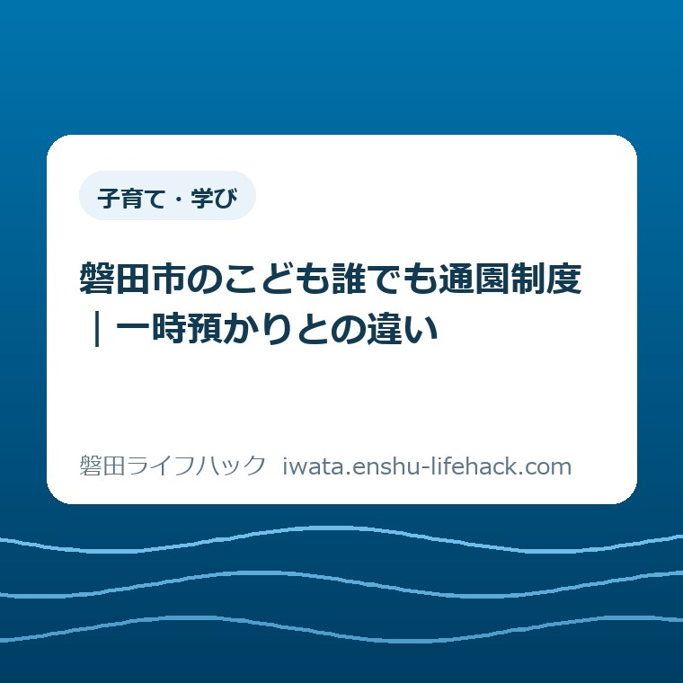

子育て・学び
磐田市のこども誰でも通園制度｜一時預かりとの違い

この記事の要点
Q. 0〜2歳の子を少し預けたい。こども誰でも通園制度と一時預かりは何が違いますか？
A. 0〜2歳では基本料金はどちらも1時間300円です。誰でも通園は子どもの育ちを目的とする月10時間枠で、市の認定と初回面談が必要。一時預かりは急な仕事、病気、リフレッシュなど保護者の事情に対応し、各園へ直接申し込みます（2026年9月3日確認）。
先に結論——同じ300円でも、制度の入口が違う
磐田市の乳児等通園支援事業（こども誰でも通園制度）と一時預かり事業は、0歳から2歳の基本料金がどちらも1時間300円です。料金だけを見ても選べません。違うのは、誰の何を支える仕組みか、対象年齢、月の上限、申込みの順番です。子どもの健康予定を家族で整理するときは、予防接種を9月にアプリで確認する順番も併せて見てください。
こども誰でも通園制度は、保護者の就労要件を問いません。保育施設などに通っていない生後6か月から満3歳未満の子どもが、月10時間の枠内で利用します。家庭の外で同年代の子どもや保育者と関わる経験をつくり、子どもの育ちを応援する制度です。
一時預かりは、保護者の急な仕事、病気、冠婚葬祭、リフレッシュなどに対応します。対象は保育施設などに在籍していない未就学児です。共通の月10時間枠は示されておらず、利用できる日、時間、年齢は園ごとに異なります。
私は磐田市で不動産業をしている大石浩之（磐田市／不動産業）です。保育の専門家ではありません。制度を使うご家族の側から、公式ページの言葉を「いくらか」「何回か」「誰が先に動くか」に置き直します。
先に断っておきます。対象になるか、希望日時に空きがあるか、給食を頼めるかは、子どもの年齢や施設で変わります。この記事では2026年9月3日に確認できた共通部分を整理します。最後は磐田市の公式ページと利用施設で確かめてください。
対象は生後6か月から3歳の誕生日直前まで
磐田市のこども誰でも通園制度の対象は、利用日時点で生後6か月から満3歳未満の子どもです。市のFAQは、利用できる期間を「生後6か月になる前日から、3歳の誕生日の2日前まで」と説明しています。
もう一つの条件は、幼稚園、認可保育所、認定こども園、地域型保育、企業主導型保育事業などの保育施設に通っていないことです。保護者が働いているかどうかは問われません。
意外なのは、保護者が休むためだけの制度ではないことです。市は、家庭では得にくい経験を通じて子どもの育ちを応援することを主な目的に置いています。預けることに後ろめたさを持たなくてよい入口だと私は読みました。
一時預かりの対象は、保育施設などに在籍していない未就学児です。3歳以上も対象になり得る点で、満3歳未満までのこども誰でも通園制度より年齢の幅があります。
定期的な入園とは別の制度です。毎日の保育が必要な場合は、幼稚園・保育園・こども園の入園で申込みの入口を確認してください。

比較表——料金より、目的と申込みを見る
磐田市のこども誰でも通園制度と一時預かりの違いは、料金表だけでは見えません。0〜2歳の基本料金は同じだからです。生活の段取りに関わる五つの軸で比べます。
| 比べる項目 | こども誰でも通園制度 | 一時預かり |
|---|---|---|
| 主な目的 | 家庭外の経験を通じた子どもの育ち | 急な仕事、病気、冠婚葬祭、リフレッシュなど保護者の事情 |
| 対象 | 生後6か月〜満3歳未満の未就園児 | 保育施設などに在籍していない未就学児 |
| 基本料金 | 1時間300円 | 3歳未満は1時間300円、3歳以上は250円 |
| 利用上限 | 月10時間。繰越・前倒し不可 | 市のページに全施設共通の月上限なし |
| 最初の手続き | 市へ認定申請、システム登録、初回面談 | 利用したい園へ直接確認・申込み |
一時預かりの具体的な施設や確認先は、当サイトの保育園・一時預かりの案内に整理しています。利用できる曜日や時間は、各施設へ直接確認する必要があります。
どちらも、給食やおやつなどの実費が別にかかる場合があります。1時間300円だけを家計簿に入れて終わりではありません。昼食をまたぐか、弁当持参か、送迎に何分かかるかまで見ます。
ここは言い切ります。同じ1時間300円なら、安いほうを選ぶという比較はできません。最初に決めるのは「子どもに定期的な家庭外経験をつくりたい」のか、「この日の保護者の事情に対応したい」のかです。
月10時間を、家の予定表へ置き直す
こども誰でも通園制度の月10時間は、週1回2時間なら月4回で8時間、月5回ある月なら10時間です。毎週半日を安定して預ける量ではありません。短い通園を繰り返し、子どもが施設や保育者に慣れる規模です。
1時間300円なので、10時間をすべて使った基本料金は月3,000円です。週1回2時間を4回なら2,400円。ここに給食、おやつ、送迎に使う燃料や時間が加わる場合があります。
余った時間は翌月へ繰り越せません。翌月分を前倒しすることもできません。子どもの体調不良で2回休んでも、その時間を翌月に20時間として使う形にはなりません。
月10時間を「少ない」と感じるご家庭はあると思います。私も、保護者がまとまった用事を済ませる預け先として見ると、十分かどうか迷います。ただし、子どもの育ちを目的とする短い通園枠として見ると、制度の設計は理解できます。
月10時間で足りない事情があるときは、一時預かり、ファミリー・サポート・センターなどを別に探すことになります。預け先以外の支援も含めた入口は、磐田市の子育て支援で確認できます。

申込みは五段階。予約だけでは始まらない
磐田市のこども誰でも通園制度は、つうえんポータルで利用申請と認定申請をするところから始まります。利用したい日の前日に、空き枠を見てすぐ予約する制度ではありません。
第一段階は、つうえんポータルでの申請です。市が対象条件を審査します。
第二段階は、認定後に届くメールから、こども誰でも通園制度総合支援システムのアカウントを登録することです。
第三段階は、利用したい施設の初回面談です。システムで面談を予約し、子どもの生活、健康状態、アレルギー、送迎者などを施設と共有します。面談は必須です。
第四段階は、受入可能と確認された施設の空き枠から利用日時を予約することです。複数園を使うことはできますが、市はなるべく同じ園を継続して使うよう案内しています。
第五段階が当日の利用です。利用中は施設からの緊急連絡を受けられる状態にし、迎えに遅れる場合は施設へ連絡します。
キャンセル時は、早めに施設へ連絡し、総合支援システムでも予約を取り消します。子どもの体調で予定が動きやすい時期だからこそ、連絡先をスマートフォンへ登録しておくと手戻りが減ります。
実施施設は8園。ただし受入れ方が二種類ある
2026年9月3日時点で、市ページに掲載された実施施設は8園です。一般型3園と余裕活用型5園に分かれ、同じ制度でも空きの出方が違います。
一般型は龍の子幼稚園、四季の風保育園、まな保育園です。専任の保育士を配置し、年間を通じて受け入れる方式です。
余裕活用型はいずみ第三保育園、聖隷こども園こうのとり東、子育てセンターみなみしま、岩田こども園、ハグくみベビー磐田園です。通常保育のクラスに空きがある場合、その範囲内で受け入れます。
余裕活用型は、制度の対象であっても希望日に必ず使えるわけではありません。満員の園はシステムに表示されず、新規受付を止めている園では面談予約ができない場合があります。
磐田市は南北に長く、園までの距離は地区で大きく変わります。1時間の利用に往復の運転が長くかかれば、保護者が使える正味の時間は短くなります。園名だけでなく、自宅からの片道時間も測ってください。
良い点——就労証明なしで、子どもの経験から始められる
こども誰でも通園制度の良い点は、保護者の就労要件を問わないことです。働いているか、介護をしているかといった理由を先に証明せず、未就園の子どもに家庭外の時間をつくれます。
二つ目は、1時間300円という単価と月10時間という枠が明示されていることです。月の基本料金を最大3,000円と見積もれます。家計の予定を立てる入口がはっきりしています。
三つ目は、初回面談を必須にしたことです。手続きは一段増えますが、初めて離れて過ごす子どもの生活や体調を、利用前に施設へ伝えられます。予約ボタンだけで預けるより安心材料になります。
生活保護世帯と、市町村民税所得割額77,101円未満の世帯には利用料の減免があります。該当する場合は認定申請時に欄を記入し、課税証明書などを添付します。自動で減免されるとは限らないため、申請時に確認が要ります。
注文したい点——利用単位の説明を一つにそろえてほしい
こども誰でも通園制度について注文したい点は、利用時間の単位の説明です。市ページ本文には「1時間単位」、同じページのFAQには「最低1時間から30分単位」とあります。初めて読む保護者には、1時間半を予約できるのか判断しにくい表記です。
私はどちらがシステム上の最終仕様なのか、公開ページだけでは断定できません。記事では具体的なFAQの説明を優先して「最低1時間、以後30分単位」と整理します。ただし、予約画面と利用施設で最終確認してください。
もう一つは、一般型と余裕活用型の違いが、園名一覧を見るだけでは生活の予定に直結しにくいことです。余裕活用型は通常クラスの空きに左右されます。毎週同じ曜日に使える見込みがあるかは、面談前に知りたい情報です。
一事業者の要望としては、施設ごとの曜日、時間帯、昼食、予約可能期間を同じ書式で並べてほしい。保護者が八つの園を一つずつ開いて比べる手間を減らせます。
大石の視点——制度名より、家の予定表で選ぶ
ここからは、特定のご家庭の体験談ではありません。体験ストックに該当する実話がないため、磐田市で暮らしの相談を受ける私の意見として書きます。
制度の説明は筋が通っています。ただ、使うご家族の側に立つと、最初に出る質問は「月に何回行けるか」「送迎を含めて何時間空くか」「最初に誰が申請するか」です。理念より先に、家計と予定表へ落とす必要があります。
同じ1時間300円でも、誰でも通園と一時預かりは代用品ではありません。毎月短く同じ園へ通い、子どもが家庭外の人や場所に慣れるなら誰でも通園。通院、急な仕事、冠婚葬祭など特定日の事情なら一時預かり。この分け方が実務的です。
私が迷うのは、週1回2時間ほどの利用が、すべての子どもに合うとは言い切れない点です。慣れるまでの速さは子どもごとに違います。制度の枠を使い切ることより、面談で子どもの様子を伝え、短い時間から試すことを優先したいと考えます。
預け先探しの背景に、眠れない、食事が取れない、孤立しているといった負担があるなら、月10時間だけで抱え込まないでください。市の相談先は子ども・家庭の相談窓口から確認できます。
対案・結論——今日、子どもの年齢と利用目的を一行で書く
今日できる一歩は、子どもの生年月日と、預けたい理由を一行で書くことです。「1歳2か月。週1回、同じ園で2時間ほど家庭外の経験をつくりたい」なら、こども誰でも通園制度の対象確認へ進みます。
「2歳。来週の通院日に4時間預けたい」なら、一時預かりの実施園へ利用可能日と時間を確認します。「平日ほぼ毎日必要」なら、保育園や認定こども園の入園手続きです。
こども誰でも通園制度を選ぶ場合は、つうえんポータルで認定申請を始めます。利用予定日が決まっていなくても、認定、システム登録、初回面談には時間がかかります。先に入口だけ通しておくと動きやすくなります。
一時預かりを選ぶ場合は、使いたい園へ電話し、対象年齢、希望日、利用時間、昼食、事前登録、持ち物をまとめて聞きます。一項目ずつ電話をかけ直すより、紙に六つ書いてから聞くほうが早いです。
制度の名称で決めず、子どもの年齢、利用目的、必要時間、送迎距離の四つで選ぶ。これがこの記事の結論です。個別条件と空き状況は変わるため、申請前と予約前に磐田市公式ページで確認してください。
- こども誰でも通園制度は、生後6か月から満3歳未満の未就園児が対象
- 保護者の就労要件はなく、月10時間まで。繰越と前倒しは不可
- 基本料金は1時間300円。10時間すべて使うと月3,000円
- 一時預かりも3歳未満は1時間300円。料金ではなく目的、対象、上限、申込みで選ぶ
- 誰でも通園は市の認定、システム登録、初回面談を経て利用予約する
- 2026年9月3日時点の掲載施設は一般型3園、余裕活用型5園
- 利用単位は本文とFAQに表記差があり、予約画面と施設で確認が必要
よくある質問
磐田市のこども誰でも通園制度と一時預かりは、料金が違いますか。
0歳から2歳では、基本料金はどちらも1時間300円です。こども誰でも通園制度は月10時間の枠があり、市の認定と初回面談が必要です。一時預かりは利用理由に応じて各園へ直接申し込み、利用可能日や時間は園ごとに異なります。給食やおやつの実費が別にかかる場合があります。
仕事をしていなくても、こども誰でも通園制度を使えますか。
使えます。保護者の就労要件はありません。ただし、利用日時点で生後6か月から満3歳未満であり、幼稚園、認可保育所、認定こども園、地域型保育、企業主導型保育事業などに通っていないことが条件です。個別の対象可否は磐田市公式ページで確認してください。
月10時間を使い切れなかったら、翌月へ繰り越せますか。
繰り越せません。前月の余りを翌月へ回すことも、翌月分を前倒しすることもできません。月10時間は、週1回2時間なら月4回で8時間、月5回ある週では10時間という規模です。曜日、時間帯、昼食、空き状況は施設ごとに確認が必要です。
参考にした公式情報
- 乳児等通園支援事業（こども誰でも通園制度）／磐田市（2026年9月3日確認・ページ更新日2026年8月13日）
- こども誰でも通園制度 利用者向け案内／磐田市（2026年9月3日確認・申請受付開始2026年3月1日）
- 一時預かり事業／磐田市（2026年9月3日確認）
- 幼児教育・保育無償化／磐田市（2026年9月3日確認）

最終確認日：2026-09-03 ／ 本記事は公表情報と執筆者の見解を分けて記載しています。制度、料金、対象、利用可能日時は変わる場合があるため、最新情報は磐田市公式ページでご確認ください。